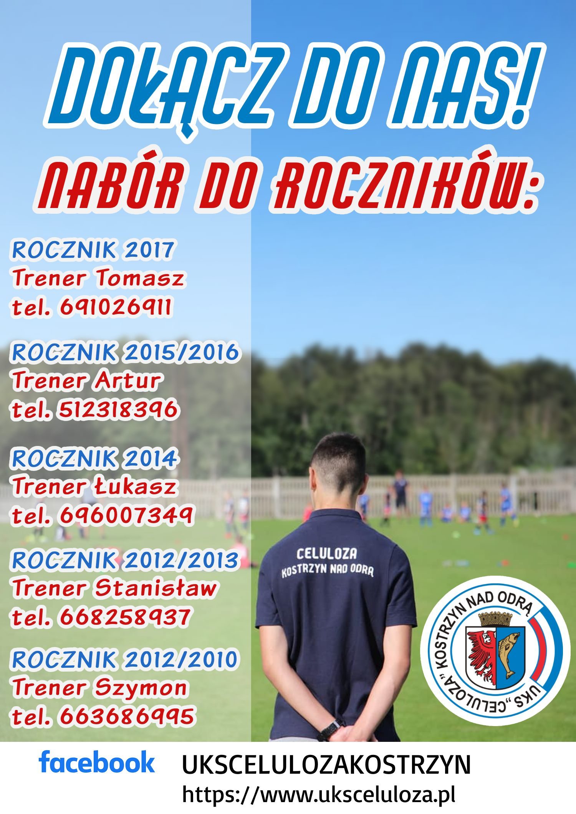

Rekrutacja UKS Celuloza
UKS Celuloza prowadzi zapisy przez cały rok kalendarzowy. Dla każdego znajdzie się miejsce, bez względu na umiejętności, wagę czy predyspozycje fizyczne. Zapraszamy wszystkie dzieci. My nie prowadzimy selekcji. Każde dziecko jest równe. Szczególnie zachęcamy do zapisów do najmłodszej grupy wiekowej - rocznika 2016. Pierwszy miesiąc jest bezpłatny i niezobowiązujacy, aby poznać czy dziecko zaklimatyzuje sie w grupie i będzie miało radość z zabaw ruchowych.
Rocznik 2016
Ruszyły zapisy dla rocznika 2016. Zachęcamy rodziców do zapisów pod numerem telefonu 512 318 396 lub mailowo pod adresem: zapisy@uksceluloza.pl
Inne roczniki
- Rocznik 2015 - tel. 512 318 396
- Rocznik 2014 - tel. 696 007 349
- Rocznik 2013 - tel. 726 975 770
- Rocznik 2012 - tel. 726 975 770
- Rocznik 2011 - tel. 663 686 995
- Rocznik 2010 - tel. 663 686 995
Zajęcia prowadzone są przez dwóch trenerów w każdym roczniku a maksymalna liczebność grupy to 20 osób.
Składka miesięczna: 100 złotych. Każde kolejne dziecko w klubie to -50% opłaty.
Całkowicie zwalniamy z opłaty za dzieci w trudnej sytuacji materialnej.
W ramach zajęć dzieci otrzymują nieodpłatnie:
- bezpłatny pierwszy miesiąc;
- bezpłatne treningi bramkarskie dla chętnych dzieci;
- strój treningowy;
- strój meczowy;
- dres;
- ortalion;
- transport na turnieje i mecze busem/autobusem z licencjonowanym kierowcą.
Zapisy mozliwe także przez poniższy formularz
Uczniowski klub sportowy Celuloza Kostrzyn nad Odrą został zawiązany z dniem 26 czerwca 2014 roku, kiedy odbyło się zebranie założycielskie. Na zebraniu wybrano ówczesny zarząd stowarzyszenia w składzie: Stanisław Grzelczak (prezes), Aneta Gorajska (wice prezes), Alina Kodzis (członek).
Już 28 lipca 2014 roku pod numerem UKS/2/2014 klub został wpisany, decyzją Starosty Gorzowskiego do Ewidencji Uczniowskich Klubów Sportowych. Po roku (dokładnie 12 listopada 2015 roku) na walnym zebraniu sprawozdawczo-wyborczym został ustalony nowy skład zarządu: Stanisław Grzelczak (prezes), Anna Karolak-Rychterska (wice prezes), Adrian Kłodawski, Arkadiusz Mikołajczyk i Dawid Waskin (czlonkowie).
Uczniowski klub sportowy Celuloza został powołany z inicjatywy rodziców młodych adeptów sztuki piłkarskiej. Powstaliśmy, ponieważ jesteśmy pasjonatami piłki nożnej i chcieliśmy stworzyć naszym dzieciom jak najlepsze warunki do treningów. Działamy w zakresie dostarczania zawodnikom odpowiedniego sprzętu i ubioru.
Trzeba podkreślić, że nasza filozofia klubowa zawiera się w stwierdzeniu, że nie najważniejszy jest wynik meczu ale kształtowanie i rozwijanie pozytywnych cech charakteru i osobowości naszych młodych piłkarzy w duchu fair play. W naszym klubie ogromną wagę przywiązujemy również do atmosfery i dlatego też organizujemy letnie obozy sportowe, wspólne zabawy integracyjne zawodników, rodziców i kadry szkoleniowej. Wszystko to czyni z nas jedną, wielką piłkarską rodzinę i cieszy nas bardzo ciągły rozwój nie tylko trenerów czy piłkarzy ale również klubu, który odnotowuje kolejne sukcesy na gruncie sportowym. Cieszy nas również, że nasza filozofia spotkała się z ciepłym przyjęciem nie tylko w naszym mieście. Nasze barwy klubowe reprezentują obecnie także chłopcy z okolicznyxh miejscowości. Jesteśmy dumni, że to właśnie w Kostrzynie chcą oni rozwijać swoje sportowe talenty i piłkarska pasję pod okiem naszych trenerów. Dla dobra kostrzyńskiego futbolu współpracujemy z Miejskim Ośrodkiem Sportu i Rekreacji w Kostrzynie, innymi stowarzyszeniami sportowymi oraz wszystkimi, którym dobro lokalnej piłki nożnej leży na sercu. Mamy nadzieję, że nasi wychowankowie będą grali kiedyś w zespole seniorskim Celulozy - wszak nazwa zobowiązuje.
Życzymy im tego z całego serca!